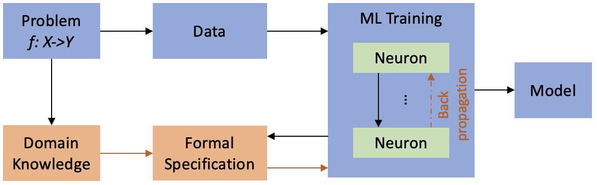

Xugui Zhou
Assistant Professor Electrical Engineering Computer Science Louisiana State University Office: BRAD 333, Baton Rouge, LA Email: xuguizhou AT lsu dot edu
Assistant Professor Electrical Engineering Computer Science Louisiana State University Office: BRAD 333, Baton Rouge, LA Email: xuguizhou AT lsu dot edu
Machine learning techniques are powerful to capture the input-output relations with high accuracy but should be constrainted to satisfy safety-related properties, especially in safety-critical applicatons (e.g., ADS, medical CPS). This work proposes a combined knowledge and data-driven approach for runtime prediction and mitigation of hazards. The proposed approach combines expert Knowledge on domain-specific Safety constraints with data from the closed-loop CPS operation to design a safety engine that can be integrated with a CPS controller’s interface to infer system context, predict impending hazards, and prevent the execution of unsafe control actions through generating preemptive and corrective actions.
In this work, we use an orthogonal model-driven approach to the regular data-driven techniques. Instead of focusing on exploring the entirety of the fault parameter space, we focus on a systematic characterization of the effect of the values of the parameter space (e.g., start time and duration of faults) in conjunction with the dynamic state of the vehicle to identify the most opportune system contexts to launch the attacks. We propose a Context-Aware safety-critical attack that can find the most critical context during a driving scenario to activate attacks that strategically corrupt the ADAS outputs, with the goal of (1) maximizing the chance of hazards and (2) causing hazards as soon as possible, before being detected/mitigated by the human driver or the ADAS safety mechanisms.
Left: An example collision resulted from the attack. Right: An attack is stopped by simulated driver intervention.
 Google Scholar
Google Scholar
 LinkedIn
LinkedIn